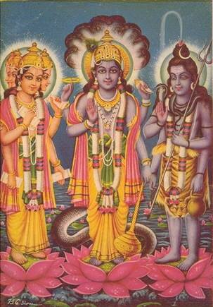

Hint mitolojisi
Hint mitolojisi, Sanskrit yazınında varlığını bulan ve Hinduizmle ilintili anlatılar bütünüdür. Nepal ve Hint kültürünün bir alt kümesi olarak algılanan Hint mitolojisi, tekdüze bir yapıdan çok farklı gelenek, sınıf, felsefe ve coğrafyaya sahip insanların bir araya getirdiği öyküleri temsil etmektedir. Kutsal metinler olan Vedalardan beslenmektedir.
Dünyadaki tüm mitolojiler içinde belki de en karmaşığı Hint mitolojisidir. Bunun nedenlerinden biri, Hint mitolojisinin çok eskilere dayanmasıdır. Hindular'ın en eski dinsel kitapları olan Rigveda'mn 3.000 yıldan daha eski olduğu sanılıyor. Bu eski kitabın bile, efsanelerin ortaya çıkışından çok sonra yazıldığı sanılmaktadır.
Rigveda'yı açıklayan ilk düşünürler, kitabın tanrıları üç gruba ayırdığını söylemişlerdir: Gökyüzünde yaşayanlar; havada ama yeryüzüne yakın yaşayanlar ve yeryüzünde yaşayanlar. Yeryüzünde yaşayan en önemli tanrı, ateş tanrısı Agni'ydi. Fırtına tanrısı İndra havada, Güneş tanrısı Surya gökyüzünde yaşardı. Bir başka tanrı da gökyüzünün kendisi olan Dyaus'tu. Dyaus adı ile Yunan tanrısı Zeus'un adı arasında bir bağlantı vardır; Zeus gibi bu tanrı da tüm tanrıların babasıydı.
Bu ilk tanrılardan en güçlüsü İndra'ydı. Yıldırımlar yağdırarak dağları devirir, dağların içindeki suları tutsak eden canavarı öldürürdü. Eski Hindular, bitkilerin büyümesini sağlayan yağmurları getiren ilk fırtınaları böyle açıklıyorlardı. Adama benzediği düşünülen İndra'nın tersine, Agni resimlerde çoğunlukla ateşe benzetilirdi. Üç bacağı ve yedi ışını vardı. Çok parlaktı, alev rengindeydi ve 1.000 gözüyle her yöne bakabilirdi.
Sonraları Hint tanrılarının en önemlisi olan Vişnu ve Şiva bugün de Hindular'ın baş tanrılarıdır. Vişnu çoğu kez bir kartalın üzerinde uçan, dört kollu bir tanrı olarak gösterilir. Yeryüzünde değişik insan ve hayvan görünümlerinde belirdiğine inanılır.
Vişnu gibi, Şiva da dört kolludur. Bazen tek, bazen üç, bazen de beş kafalı olarak gösterilir. İnsan kafataslarından oluşmuş bir zincir taşır. Şiva'nın dünyanın sonunu getireceği de söylenir; ama aynı zamanda bebekleri dünyaya getiren de odur. Bu ve başka birçok insan benzeri tanrının yanı sıra Hintliler bazı ırmak, kuyu, dağ, taş, ağaç ve hayvanların da tanrı olduğuna inanırlardı.
Vedik Dönem
Hint mitolojisinin ilk kaynağı Vedalar’dır. Rigveda'da adına ilahiler sunulmuş olan tanrılar ya da adı geçen tanrılar, tanrıçalar ve aşağı yaratıklar, Hint mitolojisinin çekirdeğini oluştururlar. Baş tanrılar İndra, Agni, Varuna, Soma, Vayu, iki Aşvin, Surya, Vishnu, Mitra, Marutlar, Brihaspati, Vivasvat, Savitri, Puşan, Rudra, Ribhular, Dyaus, Parcanya, Matarişvan, Bhaga, Vastoshpati, Yama, Vişvakarman, Tvashtri'dir. Baş tanrıçalar ise, Aditi, Prithivi, Ushas, Sarasvati vs.'dir. Ayrıca Rakshasa, Pişaça, Gandharva, Apsaras gibi aşağı mitolojik yaratıklardan ve Manyu (Öfke), Şraddha (inanç), Pracapati (Yaratıkların Efendisi) gibi soyut tanrılardan sözedilir.
Vedik dönemin diğer bir kaynağı Brahmanalar'dır. Bunlar, kurban törenleriyle ilgili metinlerdir. Kurbanı yaptıran brahmanlar, tanrı ile eş tutulur hale getirilmiştir. Bu eserlerde, Rigveda'da popüler olan tanrılar yerine, eskiden pek önemi olmayan Pracapati yüceltilir; bunun da yerini, daha sonraki edebiyatta Brahma alır. Diğer Vedik tanrılar da ortalıkta görünmekle birlikte, renkleri bir. hayli soluktur ve bütün güçlerini kendilerine sunulan kurbanlara borçludurlar. Bir yandan da Rigveda'da. ikinci planda gözüken bazı tanrılar bu ayin edebiyatında birinci plana fırlamıştır. Buna en iyi örnek Vishnu ve Rudra (Şiva)'dır. Tanrıların (devalar) ve şeytanların (asuralar) babası olarak görülen Pracapati, daha sonra Brahma olduğundan, bu üçü (Brahma- Vishnu-Şiva) destan döneminde oluşturacakları üçlünün işaretini verir gibidirler.
Brahmanalar'a ek olarak yazılmış metinlere Aranyakalar (Orman Metinleri) denir. Bunların ana konuşu kurban sembolcülüğü ve mistisizmi ile Brahman felsefesidir. Bunlar, orman çilekeşlerinin oluşturduğu eserler olup, Upanishadlar ile. aralarında kesin bir sınır çizmek olanaksızdır. En büyük Upanishadlar'ın yazıldığı bağımsız metinlerin ait olduğu tarih, Buddha ve Panini'den öncedir. Bu metinlerin mitolojik yönden çok zengin olduklarını söyleyemeyiz. Pracapati gene popülerdir. Rudra artık Şiva haline gelmektedir.Epik Dönem
Eskiyen Vedik dönemin mitolojik malzemesi Epik dönemde yerini yeni tanrısal güçlere, yeni din anlayışına bırakmıştı. Bu sırada vedik tanrılar tamamen ortadan kalkmadılar ama eski önemlerim yitirdiler. Veda dönemini simgeleyen baş tanrı İndra da bir güç karşılaştırması yapılan ve brahmanların ne kadar üstün olduğunu ispatlayan bir ilah olarak kaldı. Epik dönem tanrıları Brahma (karısı Sarasvati), Vishnu (karısı Lakshmi) ve Şiva (karısı Devi, Uma, Parvati veya Kali, Durga) en üst sıraya yerleşti. Vishnu'nun avatara'ları olan, destan kahramanları Rama ve Krishna da bu sıralamada yer aldı.
Hint mitolojisinin ikinci büyük kaynak grubu, destanlar ve Puranalar'dır. En eskisi Ramayana olarak kabul edilen destanların M.Ö. 200 ile M.S. 400 tarihleri arasında yavaş yavaş yazıya geçirildiği tahmin edilmektedir. İlk yazılıp bitirilen Ramayana, sonra Mahabharata'dır. Bir destan mı yoksa Purana mı olduğu tartışılan Harivamşa ise, her ikisinden de sonraki bir döneme aittir. Hindistan'da Maurya Hanedanlığı dönemi, birçok din ve mezhebin kendini ifade etme yarışma girdiği ve taraftar kazanmaya çalıştığı bir dönemdir. Bu dönemde Vishnuitlerin destanlara egemen olduğunu ve destan kahramanları Rama ve Krishna'yı, Vishnu'nun bir bedenlenmesi olarak gösterdiklerini görüyoruz. Oysa Caynist ve Buddhistler de kendi görüşlerini yaymaya çalışmakta ve destanların bağımsız bölümlerinde kendi etkilerini hissettirnekteydi.Buddhizmin çok güçlendiğini gören Vishnucular, Buddha' nın da Vishnu'nun bir biçimi olduğunu söylemekten geri kalmadılar.
24.000 beyit ve yedi kitaptan oluşan Ramayana Destanı, mitolojiye yeni isimler katmaktadır. Sita adına Rigveda'da rastlanıyorsa da, Rama, Hanuman, Ravana gibi karakterler bu güzel eserle efsane dağarcığına katılmaktadır. Toplam 100.000 beyit olan ve on sekiz kitaptan oluşan Mahabharata Destanı da, başta Krishna olmak üzere Pandavaları, Kuruları ve tanrı Dharma'yı mitolojide belirginleştirmektedir. Hari, Vishnu, Krishna, aynı tanrının değişik isimleridir. Harivamşa, Vishnu'nun soyunu (vamşa: soy), yani Krishna'nın yaşamını ve maceralarını anlatan bir eserdir. Vedik tanrıların destan döneminde eski ihtişamlarından yoksun olduklarını görüyoruz. Artık bir Vishnu-Şiva rekabeti başlamıştır. Zaman zaman kapışan bu tanrıları tanrı Brahma yatıştırır. Krishna, İndra'ya üstündür. Harivamşa'da onunla alay eder. Sık sık kavga ederler. Bunun nedeni şöyle açıklanabilir:Hint mitolojisinin en eski ve en büyük tanrısı İndra'dır. Yağmurlu fırtınalı gökyüzünü simgeleyen bu tanrı, aynı zamanda savaşçı Ari toplumun savaş tanrısı idi. 1028 ilahi bulunan Rigveda'nın yaklaşık 250 ilahisi ona sunulmuştur. O, başta kuraklığı simgeleyen yılan Vritra olmak üzere, birçok kötü ruh ve şeytanla çarpışır. Vritra'yı öldürdüğü zaman, onun saklı tuttuğu suları kurtarmış olur. Bazen de çalınmış olan inekler serbest kalır. Hindistan'a kuzeyden gelen beyaz tenli savaşçı bu insanlar, kendileri gibi içki içip sarhoş olan, bu sarhoşluğun coşkusuyla korkusuzca savaşlara giden bir tanrı yaratmışlardı. Ancak savaşmayı bırakıp yerleşik yaşama geçilmeye başlanmasıyla bu tanrı da önemini yitirmeye başlamıştı. Adına sunulmuş 200 ilahi bulunan Agni ve 100 ilahisi olan Soma da onunla birlikte değer kaybetmiş, tüm müttefikleri ve hemen bütün Vedik tanrılar yerlerini yeni tanrılara bırakmışlardı. Destanlardan ve Puranalar'dan önce, henüz Brahmanalar döneminde, brahmanların övülerek tanrı derecesine yükseltilmesi, bu tanrıların değer yitireceklerinin en önemli göstergesiydi. Nitekim destanlarda brahman ermişler, tanrı İndra'dan bile güçlüdürler. Onu, bir lanet okumayla etkisiz hale getirirler (Mhb. III, 122-125).
Mahabharata'da erdem ve adalet tannsı Dharma'nın, İndra'nın önüne çıktığını görüyoruz. Fakat genellikle ölüm tanrısı Varna'nın bir niteliği olarak görülen Dharma, bundan öteye bir yol katedemiyor. Vishnucuların büyük çabaları sonucu, Brahmanalar'da, Manu ve tanrı Brahma ile ilgili olan balık ve kaplumbağa efsaneleri Vishnu'ya mal ediliyor; yeniden doğuş inancından alınan güçle bunlanrı tanrı Vishnu'nun bedenlenmeleri (avatara) olduğu söyleniyordu. Bununla yetinilmemiş, Rigveda'da. üç adım atan cüce kadar küçük Vishnu'nun, ilkellerin kutsal saydığı yaban domuzunun, ormanlarda baltayla gezme alışkanlığında olan köylü tipinin (Baltalı rama) hep birer bedenlenme olduğu topluma empoze edilmişti. Sayıları ona kadar çıkartılan bu avataralar arasına, Ramayana'nın kahramanı olan Rama ile Mahabharata'nın kahramanlarından Krishna da dahil edilmişti. Rama'nın Ari düşünce ve kurumlarını ülkenin güneyine kadar yaymaya çalışan tarihsel bir kişilik olma olasılığı vardır. Öte yandan Krishna "Kara" anlamına gelen bir sözcük olup, Harivamşa'dan da anladığımız üzere, bu kişi Yamuna nehri kenarında yaşayan çoban halkın esmer derili kahramanı idi. Gerek deri rengi, gerekse Hindistan'ın yerlisi olması dolayısıyla Krishna, Ari düşünce tarzına ters geliyordu.
Rigveda'da (V, 52:17) savaşçı İndra'nın, Yamuna nehri kıyısındaki, sütleri ile ünlü ineklerin sahibi olan ve kendisine karşı gelen (VIII, 85: 13-15) tanrısız kabilelerle savaştığı anlatılır. Harivamşa'da Krishna, İndra'ya tapmak isteyen çobanları bu inançtan caydırır ve tanrılarının inekler, dağlar ve ormanlar olduğunu söyler. Buna çok kızan İndra, aşağıya müthiş bir yağmur gönderir ama parmağıyla Govardhana dağını havaya kaldırıp onu çobanların ve sürülerin üzerine bir şemsiye gibi tutan Krishna, halkını bu felaketten kurtarır. Krishna ile İndra'nın başka yerlerde de (Paricataharana Adhy. 124-140) dövüştüklerini görürüz. Bu zıtlaşmalar, "yeniden doğuş" ve "herşey tanrıdır" düşünceleriyle tanışan toplumların gözünde Krishna'yı kendilerine yaklaştırmıştır. Krishna'nın halk tarafından sevildiğini gören Vishnucular da onu, tanrı Vishnu'nun bir tür görünüşü olarak tanıtmanın kendilerine yarar sağlayacağını düşünmüşlerdir. Nitekim Bhagavadgıta'da (II, 42-44) bu yeni düşünce tarzı, eski düşünceyi Krishna'nın ağzından şöyle yermektedir: "Tutkuyla körleşmiş insanlar vardır, bunlar Vedalardaki bilgiyi son gerçek sanırlar ve daha ötesini göremedikleri cennet için konuşur dururlar. Bencil isteklerle doğru yoldan sapmış bu insanlar, zevk duymak, güç kazanmak ve yeniden doğmak için dua ederler. Beyinleri böyle sözlerle yıkanan zevk ve dünya düşkünü kişiler, asla Tek Olan'ı kavrayamazlar".
Kökü Veda edebiyatına dayanan bir eskiliğe sahip olan Puranalar, Rigveda ve Brahmanalar'da anlatılan bazı efsaneler ve sonradan uydurulmuş yeni öykülerle çok zengin bir mitolojik malzemeye sahiptir. On sekiz Purana'nın hepsini belli bir tarihe mal etmek doğru olmaz, ancak bunların M.S. 9. yüzyıl ile 10. yüzyıl arasında derlenip toparlandıkları düşünülür. Yazılış amaçları, anlaşılması zor dinsel konuları halkın anlayacağı bir dille anlatmak isteğidir. Vedik tanrılar, epik tanrılar, ermişler, kehanetler, cennet, cehennem ve yüzlerce efsane bu kitaplarda yeralır. Yaratılış, tanrı ve ermişlerin soyları, Manu devirleri, Hindistan'ın coğrafyası, komşuları, yeraltı dünyası konuları arasında yer alır. Puranalar Hint mitolojisi için eşsiz bir hazine değerindedir.Kim Kimdir, Ne Nedir?
AİRĀVATA: Tanrı İndra’nın filidir. Okyanusun Çalkalanması sırasında ortaya çıkan şeylerden biridir. Ayrıca mitolojide dört yönün birini koruyan bir canlı olarak gösterilir. Bkz. Okyanusun Çalkalanması.
AMARĀVATĪ: Tanrı İndra’nın cennetindeki görkemli şehir. Meru dağında bulunduğu söylenir. Bazen Devapura (tanrıların şehri) veya Pūshabhāsā (güneş parlaklığı) gibi isimlerle anılır. Kathāsaritsāgara’daki peri masallarında zaman zaman sözedilir.
ANASŪYA: Sözcük “iyilik, merhamet” anlamlarına gelir. Ermiş Atri’nin karısının adıdır. Rāmāyana Destanı’nda Çitrakuta tepelerinde kocasıyla birlikte yaşıyor olarak gösterilir.Çok dindar ve sert bir çilecidir ve bu sayede olağanüstü güçler kazanmıştır. Sītā onu ziyaret ettiği zaman ona, her zaman güzel görünmesini sağlayan bir yağ vermiştir.
ANGADA: Rāmāyana Destanı’nda, maymun Vālī’nin oğlu, Sugrīva’nın yeğeni olan maymun kahraman. Savaşta Rāma’ya çok yardımları olur. Babası öldükten sonra Sugrīva ona babalık yapar. Akıllı ve cesur bir karakterdir.
CAGANNĀTHA: Cagannāth diye de söylenir ve “Dünya Efendisi” anlamına gelir. Vishņu veya Kŗishņa’nın bir adıdır. Aslında, Hindistan’ın Orissa bölgesindeki Purī kentinin ünlü Vishnu idolü ve türbesidir. Purī’ye ait yerel bir tanrı, Hinduizmin içine girmiş ve o bölgenin koruyucusu olduğuna inanılan bu tanrı, Vishnu’nun bir görünüşü olarak kabul edilmiştir.
CĀMBAVĀN: Rāmāyana Destanı’ndaki ayı karakter. Maymunlarla beraber hareket eder, kendisine ait ordusu vardır. Bilgeliğiyle dikkati çeker. Rāma’nın Rāvana ile yaptığı savaşta çeşitli yararlılıklar gösterir. Savaşta ölümcül yara alanların kurtulması için nereden hangi şifalı otların getirileceğini Hanumān’a o söyler (R VI,74).
CEHENNEM: Sanskrit dilinde Naraka sözcüğüyle belirtilen cehennem, Hint hayal gücünün belirlediği ölçülerde çok çeşitlidir. Markandeya Purana’da birçok çeşidinden söz edilir. Örneğin Maharaurava (Çok Korkunç) cehennemi, 4.725.000 km. genişliğinde, bakırdan yapılmıştır. Altında ateş yanar ve korkunç derecede sıcaktır. Günahkar kişi orada elleri ve ayakları bağlı olarak durur, ortada yuvarlanarak hareket eder. Kuşlar ve böcekler her tarafını didik didik ederler. Tamas (Karanlık) cehenneminde ise çok müthiş bir soğuk vardır. Tamamen karanlıkla kaplıdır. İnsanlar orada birbirlerine çarparlar ve birbirlerinden medet umarlar. Soğuktan dişleri takırdar, açlık ve susuzluk belasıyla uğraşırlar. Kar taneleriyle yüklü keskin rüzgarlar onların iliklerine işler. Nikrintana (Kesiliş) cehenneminde devamlı olarak dönmekte olan bir çömlekçi tekerleği vardır. İnsanlar bunun üstüne oturtulurlar ve ölüm tanrısı Yama’nın hizmetçisinin hazırladığı telle kesilmeye başlanırlar. Ayaktan kafaya doğru kesilirler ve yaşamlarını yitirmedikleri için yüzlerce kez kesilirler. Apratishtha (Emniyet Yok) cehenneminde, bir yanda tekerlekler bir yanda kuyu ipleri ve kova vardır. Bir kısım insanlar sürekli olarak dönen tekerleklerin üstünde tutulurlar ve vücutlarından kan fışkırana dek orada döndürülürler. Bir kısım insan ise kova içinde sürekli suya sarkıtılırlar. Asipatravana (İğneyaprak Ormanı) cehennemi yaklaşık 135.000 km genişliğinde, güneş ışınlarıyla kavrulan bir yerdir. Burada bir orman vardır. Bu ormanın ağaçlarının yaprakları sivri, kılıç gibi keskindir. Bir yandan kaplan kadar korkunç kara köpeklerin havlamaları duyulur. İnsanlar o ormanın serin gölgesine ulaşmak isterler ancak ulaştıkları zaman tüm iğne yapraklar koparak insanların üzerine düşer. İnsanlar ateşle kavrulan yerlere düşerler. Köpekler koşup gelirler ve inleyip feryat eden insanların uzuvlarını kopartmaya başlarlar. Taptakumbha (Yanan Kazan) cehenneminde ise her tarafta alev alev yanan ateşle çevrili ısıtılmış kazanlar vardır. Bunların içi erimiş demirle kaplıdır ve öbek öbek ateş gruplarının üstünde durur vaziyettedir. Yama’nın yardımcıları günahkarları baş aşağı bu kazanların içine atarlar. Yanan organlarından sızan ilikleri ve özleri, kaynayan kazana karışır ve kazanın suyunu bulandırır. Korkunç akbabalar çatlayan kafataslarının patlamış göz delikleri kısmından çekerek insanları tekrar aynı kazanın içine atarlar. O insanların kaynayan kazandaki erimiş kafaları, organları, etleri, derileri ve kemikleri yeniden birleşirler. Yama’nın hizmetçileri, ellerinde kaşıklarla bu bereketli karışımı sürekli olarak karıştırır dururlar.. Vishnu Purana’da (II,6) 28 tane cehennem sayılır, ancak bunların betimlemeleri yapılmaz; sadece hangi cehennemin hangi suça karşılık geleceği belirtilir.
ÇANDİKĀ: Tanrıça Durgā’nın bir adıdır. Bkz. Durgā.
DAŞAMAHĀVİDYĀH Bunlar, en yüce tanrıça grubudur. Oluşumları hakkında şöyle bir olay anlatılır. Daksha’nın kızı Sati, tanrı Şiva’nın karısıdır. Babasının kurban törenine çağırmamasına kızan Sati, kendisini on parçaya bölerek bu tanrıçaları yaratır. Şiva, Sati’nin öfkesinden korkar ve gitmesine izin verir. Bu durumda Sati’nin gücü Şiva’dan daha fazladır. Kālī ve Tārā bağımsız tanrıçalar olarak da karşımıza çıkarlar. On Mahavidya şunlardır: Kālī, Tārā, Çinnamastā, Bhuvaneşvari, Bagalā, Dhūmāvati, Kamalā, Mātangī, Şodaşī, Bhairavī.
DHANVANTARİ: Okyanusun Çalkalanması ile ortaya çıkan tanrıların hekimidir. Tıp biliminin babası kabul edilip ünlü Ayurveda (Yaşam Bilgisi) ona mal edilir. Okyanusun çalkalanması sırasında içinde nektar bulunan beyaz bir kapla belirir. Ona bu yüzden Sudhāpāni (elinde nektar taşıyan) ve Amrita (ölümsüzlük) gibi isimler verilir.
EKAÇAKRA: Mahābhārata Destanı’nda, Pāndu oğullarının anneleri Kuntī ile birlikte gelip bir Brāhman’ın evinde kaldıkları kasaba. Sözcük anlamı “tek tekerlek” tir. Bhīma, kasabayı haraca kesen ifrit Baka (veya Vaka) yı burada öldürür. İfrit hergün sırayla bir evden bir insanı ve çeşitli yiyecek maddelerini ormana getirmelerini istemiştir. Sıra, Pāndavaların evinde kaldıkları Brāhman’ın ailesindedir. Ana, kız ve oğul hepsi de kendini feda etmek istemektedir. Konuşmalarını duyan Kuntī, oğlu Bhīma’nın bu işi çözeceğini söyler. Nitekim Bhīma ormana gider, ifritle alay ettikten sonra onu öldürür ve kasabayı bir kabustan kurtarır.
EKALAVYA: Mahabharata Destanı’nın büyük savaş hocası, Kuruları ve Panduları yetiştiren Drona birgün bir Bhilla çocuk tarafından ziyaret edilir. Çocuğun adı Ekalavya’dır ve okçu olmayı çok istemektedir. Ancak aşağı kast mensuplarına bu bilgileri vermek yasak olduğu için Drona çocuğun bu isteğini reddeder. Ekalavya ormandaki klübesinin yanına Drona’ya tıpatıp benzeyen bir heykel yapar ve ona baka baka kendi kendine ok atma çalışmaları yapar. Zaman geçer ve günün birinde Drona, genç prenslerle birlikte ormanda dolaşırken, Ekalavya’ya rastlar. Büyük savaş üstadı orada Bhilla çocuğun ok ve yay kullanmadaki becerisine hayran kalır. Bunları kimin öğrettiğini sorduğunda çocuk, kendi yaptığı Drona heykelini gösterir. Drona bu durumdan çok etkilenmiştir, ancak bir aşağı kast mensubu olan çocuğu bir tehlike olarak görür. Ona “hocana hediye olarak ne sunacağını” sorar. Çocuk ne isterse istesin vereceğini söyler. Drona da ondan sağ elinin baş parmağını ister. Ekalavya hiç tereddüt etmeden bıçağıyla baş parmağını keser ve böylece Guru’suna olan bağlılığını kanıtlamış olur. Bu isimde bir Nishada kral da vardır. Görünmez olan bu kralı Krishna öldürmüştür.
GOVARDHANA: Bugünkü Mathura (Vrindavan) da bulunan ünlü bir dağdır. Vrindavan’a yirmibeş kilometre uzaklıktadır. Bu bölge, Krishna’nın gençliğinin geçtiği yerdir. Efsaneye göre Krishna bu dağı tek eliyle kaldırıp, çobanların üstünde bir şemsiye gibi tutarak, onları fırtınadan korumuştur. Fırtınayı çıkartan İndra ile çoban tanrı Krishna arasındaki bu çekişme, bize farklı toplumlar arasındaki uyuşmazlığın izlerini veriyor. Bkz.Krishna.
HAYAGRĪVA: Sözcük “at boyunlu” anlamına gelir. Bir efsaneye göre, uyumakta olan Brahmā’nın ağzından kaçan bir Daitya, Veda’yı çalar ve Vishnu’nun Balık bedenlenmesi tarafından öldürülür. Başka bir efsaneye göre ise, iki Daitya tarafından kaçırılan Veda’yı kurtarmak için tanrı Vishnu kendisi bu kılığa girer.
KADRU: Çok sert ve uzun çileler doldurmuş bir ermiştir. Tanrı İndra onun güç kazanmasından korkmuş ve onu güçten düşürmek için gökten Pramloçā isimli periyi göndermiştir. Ermiş onunla, kendisine bir gün gibi gelen yüzlerce yıl geçirmiş fakat sonunda onu reddederek Vishnu’nun ülkesine çekilmiştir. Pramloçā daha sonra kızı Mārishā’yı doğurmuştur.
KĀLİYANĀGA: Beş başlı bir yılan. Yamuna nehrinde yaşadığı ve orayı zehiriyle kirlettiği söylenir. Krishna nehre dalıp onunla boğuşur, onun tepesinde dans eder ve sonra onu okyanusa sürgün eder. Böylece hem sığırları hem de insanları bu dertten kurtarır.
KUŞA-LAVA: Kuşulava diye de söylenir. Bu iki ismi dual formda söylemek istersek o zaman da Lava’yı öne alıp “Lavakuşau” biçiminde söylememiz gerekir. Bunlar Rāmāyana Destanı kahramanı Rāma’nın çocuklarıdır. Ermiş Valmīki’nin çile yerinde büyümüş ve Rāmāyana’yı onun yanında ezberlemişlerdir. Bkz.Rāmāyana.
LAVAKUŞAU: Rāma’nın oğulları. Bkz. Kuşalava.
MAHĀKĀLA: Sözcük “büyük zaman” anlamına gelir ve özellikle tanrı Şiva’nın korkunç biçimini niteler. Zaman herşeyi alıp götürdüğü için yok edici tanrıya böyle bir isim verilmiş. Karısı Kālī de “Mahākālī” olarak gözükür. Bkz.Şiva, Kālī.
MAHİSHĀSURA: Asura-mahisha da denir. Asura “kötü ruh”, Mahisha “manda” demektir ve ikisi birlikte “manda biçimli kötü ruh” anlamına gelir. Hindu mitolojisinde tanrıça Durga ile yaptığı savaşla bilinir. Aslana binen Durgā, uzun bir savaştan sonra, mandanın boynunu keser ve içinden çıkan ifriti öldürür. Tanrıça, narin ayağıyla mandanın güçlü bedenini ezer. Bu olaydan dolayı Durgā’ya “Mahishamardini” (Mahisha’yı Öldüren) adı verilir. Bu mitin ortaya çıkmasına, olasılıkla, doğu Hindistan’ın pirinç çeltiklerinde kullanılan mandanın neden olduğu düşünülür. Batının buğday, arpa ve üzüm yetiştiren halkı boğayı kullanmakta ve iki kültür arasında bir çatışma yaşanmaktadır. Efsane bunu yansıtıyor olsa gerek. Mandayı öldüren Durgā, tanrı Şiva’nın karısı veya onun dişil enerjisi (şakti) olarak görülür. Durgā Veda tanrılarının (Agni, Vishnu, Varuna, Yama, İndra) silahlarını kullansa da ifrite karşı bunlar bir işe yaramazlar ve sonra ifriti kendi öz gücüyle öldürür (Vamāna Purāna, XXI, 43-46). Buradan Ana Tanrıça inancının ululandığını, eski tanrıların değer yitirdiğini anlamaktayız. Ayrıca aslan ve manda da doğanın birbirine düşman iki canlısıdır ve bu mitte bu da vurgulanmış oluyor.
MAYMUNLARIN YARATILIŞI: Rāmāyana Destanı’na göre tanrı Brahmā bütün tanrılara, tanrı Vishnu’ya yardımcı olmaları için, kendileri gibi güçlü yaratıklar doğurtmalarını buyurdu. Bunun için göksel periler olan Apsarāslar, Gandharva kadınları, genç Yakshalar, dişi Nāgalar, Vidyādhara kadınları, Kinnara kızları, dişi ayılar ve dişi maymunlar kullanılabilirdi. Brahma örnek olarak, esnerken ağzından yarattığı ayı Cāmbavān’ı gösterdi. Tanrılar hemen söylenileni yaptılar ve maymun oğullarını yarattılar. İndra Vālī’yi, Güneş Tanrısı Sugrīva’yı, Brihaspati bütün maymunların en akıllısı olan Tārā’yı, Kubera Gandhamādana’yı, Vişvakarma güçlü maymun Nala’yı, ateş tanrısı Agni Nīla’yı, Aşvin Çifti Mainda ve Dvivida’yı, su tanrısı Varuna maymun Sushena’yı, Parcanya Sarabha’yı yarattı. Rüzgar Tanrısı Marut, akıllı, güçlü ve havada hızla uçabilen ünlü Hanumān’ı yarattı. Soylu ermişler, Siddhalar, göksel Vidyādharalar ile Nāgalar ve göksel şairler olan Çāranalar da maymunlarınkine benzer kahramanlar yarattılar. Böylece Rāvana ile çarpışacak binlerce yiğit asker oluştu. Maymunların bir kısmı, iki kardeş olan Vālī ile Sugrīva’nın çevresinde toplandı. Bir kısmı da Nala, Nīla, Hanumān ve diğer maymun liderlerinin etrafında toplandı. Yeryüzünün heryerini, dağları, ormanları ve denizleri bu maymun sürüleri kapladı. Hepsinin de amacı Rāma’ya yardım etmekti (R I, 17).
MOHİNĪ: Büyüleyici güzellikteki göksel peri. Okyanusun Çalkalanması sırasında ortaya çıkan nektarı ifritlerin elinden almak için tanrı Vishnu’nun girdiği olağanüstü güzellikteki kadın. İfritler onun büyüsüne kapılıp şaşırarak ellerindeki nektarı ona vermişlerdi.
NAVADURGĀH) Tanrıça Durgā’ya ait olduğu düşünülen dokuz tanrıça biçimi. Bunlar Şailputrī, Brahmaçarinī, Çandraghantā, Kushmandā, Skandamatā, Katyayanī, Kalaratrī, Mahagaurī, Siddhadhatrī’dir. Hindular Ekim ayında kutlanan ve dokuz gün süren Navaratri bayramında, sırayla her gün birine olmak üzere, bu tanrıçalara taparlar.
OKYANUSUN ÇALKALANMASI: Tanrılar ölümsüzlük içkisine (amrita) sahip olmak için kafa kafaya verip düşünürler. Sonunda okyanusu çalkalamaya karar verirler; çünkü bu sayede amrita ortaya çıkacaktır. Su içkiden pay isteyince Mandara dağını yüce bir kaplumbağanın üzerine oturturlar. Bu çalkama çubuğu olacaktır. Bunun çevresine yılan Vāsuki’yi dolarlar, sonra tanrılar ve ifritler çalkama ipi olan yılanı zıt uçlardan tutarak çalkalamaya başlarlar. Vishnu yorulan tanrılara ve ifritlere kuvvet bağışlar ve çalkalama sürerken okyanustan ay ve güneş çıkarlar. Daha sonra beyazlar içinde tanrıça Şrī görünür. Sonra beyaz at Uççaihşravas, Kaustubha mücevheri, ulu fil Airāvata ortaya çıkarlar. Ancak şiddetle çalkalanan okyanustan Kālakūta denilen zehir çıkar ve tüm evreni sarar. Tanrı Şiva gelir ve bu zehiri içip boğazında tutarak tüm dünyaları bir yok oluştan kurtarır. Şiva’nın boğazındaki zehir mavi renkli olduğu için bu tanrıya “mavi boğazlı” anlamında Nīlakāntha denir. Tanrıların ölümsüzlüğe götüren yolundan büyülü ağaç ve büyülü inek doğar. Sonra, elinde içi nektarla dolu beyaz bir kap tutan, tanrıların hekimi Dhanvantari meydana gelir. İfritler bu mucizeyi görünce hepsi de “o benimdir” diye bağırarak ona sahip olmaya çalıştılar. Tanrı Nārāyana, olağanüstü güzel bir kadın olan Mohinī kılığına girerek ifritleri şaşırtır ve ölümsüzlük içkisine sahip olmalarına engel olur. İçkiden tanrılara verir fakat onlara vermez. Bunun üzerine ifritler savaş çıkartırlar. Nara-Nārāyana birlikte onlara karşı savaşır. İçkiden, tanrı biçimine giren bir ifrit olan Rāhu da içer, ancak bunu fark eden Vishnu diskiyle onun başını uçurur. İfritlerle tanrılar arasında korkunç bir savaş cereyan eder. Bu savaşı tanrılar kazanır. Herşey bittikten sonra Mandara dağını yerine koyarlar. İndra, ölümsüzlük içkisini saklaması için onu Vishnu’ya verir. (Mhb.I,15; 5-13/ I,16; 1-40/I,17; 1-30). Bu efsanenin Rāmāyana (I,45) anlatımı ise, kısaca, şöyledir: “Satyayuga devrinde, Diti’nin güçlü çocukları (ifritler) ve Aditi’nin kutlu çocukları (tanrılar) büyüdüğünde, yaşlılık ve ölümden nasıl kurtulabiliriz diye düşündüler. Çareyi, okyanusun çalkalanmasından doğacak sütü içmekte buldular. Okyanusu çalkalamak için yılanlar kralı Vāsuki’yi ip olarak, Mandara dağını da değnek olarak kullandılar. Böylece hem tanrılar hem de ifritler çalkalamaya başladılar. Bin yıl geçtikten sonra yılanın birden çok başı, bir bir kayaları ısırıp zehir akıtmaya başladı. Çalkalanmanın da etkisiyle Hālāhala denilen zehir okyanusun yüzeyinde birikti. Bütün dünya, tanrılar, ifritler ve insanlar zehirlenmeye başladılar. Hemen tanrı Şiva’ya başvurup yalvardılar. Yüce Şiva-Rudra geldi ve zehiri sanki abıhayat içer gibi içti ve Hālāhala zehirini boğazında tuttu. Tanrılar ve ifritler tekrar okyanusu çalkalamak istediler. Bu defa Mandara dağı, yer altındaki Patala’ya inerek kayboldu. Vishnu’dan onu çıkarmasını rica ettiler. Vishnu da kaplumbağa biçimine girerek okyanusun dibinden dağı yüzeye çıkarttı. Bin yıl sonra Dhanvantari adında bir adam ortaya çıktı. Bu Ayurveda bilen, dindar bir kişiydi. Sonra müthiş güzellikte göksel periler oluştu. Okyanusun yüzeyindeki kremadan oluşan bu güzellere Apsarālar denildi. Onları ne tanrılar ne de ifritler eş olarak kabul etmeyince ortalık malı oldular. Gene okyanus çalkalanmasından Vārunī denilen içki oluştu. Bu, tanrı Varuna’nın kızı idi ve bir tür şarap (sura) idi. Onu şeytanlar eş olarak almadıkları için onlara Asuralar denildi. Tanrılar ise Vārunī’yi eşliğe kebul ettikleri için Suralar oldular. Atların kralı Uççaihşrava, Kaustubha denilen mücevher ve nihayet beklenen abıhayat suyu ortaya çıktı. Tanrılarla ifritler bunun için kavga etmeye başladılar. Asuralar tüm cadıları etraflarında topladı. Ölümcül bir savaş oldu, gök ve yer sarsıldı. Vishnu büyüleyici bir kız kılığına girerek abıhayatı başka bir yere kaçırdı. Tanrı Vishnu’ya karşı gelenler ona saldırınca müthiş bir savaş oldu ve Diti oğlu olan Asuralar ortadan kaldırıldı. Savaş kazanıldıktan sonra İndra, üç dünyayı da mutlulukla yönetti.”
RAMBHĀ: Okyanusun çalkalanması sırasında ortaya çıkan olağanüstü güzellikteki kadın. Bu Apsaras’ı tanrı İndra ermiş Vişvāmitra’yı baştan çıkartması için göndermiş, ancak ermişin lanetiyle peri kızı bir taş haline gelmişti. Rāmāyana Destanı’nda Kubera’nın oğlu Nalakubera’nın karısıdır, ancak Rāvana onu çok beğenir ve tüm itirazlarına rağmen onu kaçırır. Bkz. Okyanusun Çalkalanması.
RATİ: “Zevk” anlamına gelir. Aşk Tanrısı Kāmadeva’nın iki karısından biridir. Diğerinin adı ise Prīti’dir. Tanrıça Çinnamastā, yerde aşk yapmakta olan Aşk Tanrısı Kāma ile karısı Rati’nin üzerinde duruyor olarak gösterilir.
SAMPĀTİ: Rāmāyana Destanı’ndaki akbaba karakterlerden birisi, akbaba Catāyus’un kardeşidir. Vishnu’nun binek kuşu Garuda’nın oğlu olup, destanda Rāma’ya, Sītā’nın kaçırıldığı yönü göstermesiyle yardımcı olur. Kanatları, kardeşiyle birlikte yarışırlarken, güneşe fazla yaklaştığı için yanmış ve kanatsız kalmıştır. Ancak maymunlarla karşılaşıp onlara Sītā’nın Lankā adasına kaçırıldığını söylediğinde yeniden kanatları çıkar ve eski haline gelir (R IV,61-63). Bir başka söylencede Aruna ve Şyenī’nın oğludur.
SAPTAMĀTRİKĀH Bunlar, Brahman geleneğinden gelmeyen, halkın inançlarından türemiş tanrıçalardır. En önemli özellikleri, hiddetli olmalarıdır. Hastalık verir veya hastalığı giderir, çocukları korur veya onlara illet bulaştırırlar. Savaşlarda kurbanlarının kanlarını içerler. Ellerinde ve yüzlerinde çok belirleyici simgeler olmadığından onları binek hayvanlarından tanırız. Yedi Ana şunlardır: Brahmanī, Maheşvarī, Kaumarī, Vaishnavī, Vārāhī, İndranī, Çāmunda.
TĪRTHANKARALAR: Tīrthamkara da denir. Bunlar Caynist edebiyatta yer alan yirmidört ermiştir. Bu Caynist ermişlerin ilki Ŗishabha, sonuncusu da, Caynizm’in kurucusu Mahavira’dır. Tīrthankara “yolu hazırlayan” anlamına gelir. Bunlar mükemmel bilgi (kevalacnāna) sahibi insanlardır ve din kötülüğe batacağı zaman ortaya çıkıp onu kurtarırlar.
TRİŞULA: Tanrı Şiva’nın üç uçlu mızrağıdır. Bununla evreni ve tüm canlıları koruduğu düşünülür. Haftanın belirli günlerine göre dönüşü anlam kazanır. Örneğin Pazar ve Cuma günleri batıya, Salı ve Çarşambaları kuzeye, Cumartesi ve Pazartesi günleri doğuya, Perşembeleri de güneye çevrilmesinin uğursuzluk getireceğine inanılır. Hindistan’da birçok eşya ve aracın üzerinde bulunur.
VĀSUKİ: Üç büyük yılan kraldan biri (diğer ikisi Şesha ve Takshaka’dır). Tanrılar ve ifritler Okyanusu çalkalarken Vāsuki’yi Mandara dağının etrafına dolayıp çalkalama ipi olarak kullanmışlardı. Kimi araştırmacılar bu yılandan ipin dünyanın eğik eksenini sembolize ettiğini, tanrılarla ifritlerin farklı kutupları, çalkalanma hareketinin de dünyanın yalpalanma hareketini temsil ettiğini öne sürerek, ciddi astronomik hesaplamalara girişmektedirler.
VİKRAMĀDİTYA: İsmi “kahramanlık güneşi” anlamına gelir. Uccain’de yaşadığı düşünülen yarı efsanevi bir kraldır. Dönemi, M.S.l.yüzyıl (M.S.56’dan itibaren) olarak tahmin edilir. Yüz yıl hüküm sürmüş kabul edilir ve birçok maceraya atıldığı varsayılır. Vetalapançavimşati öykü serisindeki baş karakter kral Vikramāditya’dır. Burada ona Trivikramasena diye seslenilir. Efsaneye göre birden fazla Vikrama bulunduğu için, bu ismin “Vikrama’nın Üçüncü Bedenlenmiş Hali” anlamında kullanılmış olması gerekir. Bu krala kısaca “Vikrama” (Kahraman) diye de hitap edilir.
Hint mitolojisi
Kaynaklar: Vedalar( Rigveda Samaveda Yajurveda Atharvaveda) Upanişadlar Puranalar
Destanlar: Ramayana Mahabharata Bhagavat Gita
Tanrılar :Trimurti (Brahma Vişnu Şiva) Ganeşa Indra Surya
Tanrıçalar :Tridevi (Saraswati Lakşmi Parvati ) Durga Kali Varahi
Destanlardaki karakterler: Krişna Rama Sita Lakşman Hanuman Kaliya Varaha Arjuna Bişma
.jpg)
.jpg)